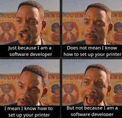

0
0




0


0
Long-time Slashdot reader fjo3 shared this report from Agence France-Presse:
Japan has approved ground-breaking stem-cell treatments for Parkinson's and severe heart failure, one of the manufacturers and media reports said Friday, with the therapies expected to reach patients within months.
Pharmaceutical company Sumitomo Pharma said it received the green light for the manufacture and sale of Amchepry, its Parkinson's disease treatment that transplants stem cells into a patient's brain. Japan's health ministry also gave the go-ahead to ReHeart, heart muscle sheets developed by medical startup Cuorips that can help form new blood vessels and restore heart function, media reports said. The treatments could be on the market and rolled out to patients as early as this summer, reports said, citing the health ministry, becoming the world's first commercially available medical products using induced pluripotent stem cells...
In a statement, Sumitomo Pharma said it had obtained "conditional and time-limited approval" for the manufacture and marketing of Amchepry under a system which is reportedly designed to get these products to patients as quickly as possible. The approval is a kind of "provisional license", the Asahi newspaper said, after the safety and efficacy of the treatment was judged based on data from fewer patients than in ordinary clinical trials for drugs.
A trial led by Kyoto University researchers indicated that the company's treatment was safe and successful in improving symptoms. The study involved seven Parkinson's patients aged between 50 and 69, with each receiving a total of either five million or 10 million cells implanted on both sides of the brain... The patients were monitored for two years and no major adverse effects were found, the study said. Four patients showed improvements in symptoms.
The article notes that "Worldwide, about 10 million people have the illness, according to the Parkinson's Foundation," while also notes that today's current therapies "improve symptoms without slowing or halting the disease progression..."
Read more of this story at Slashdot.
In a tweet that's been viewed 1.3 million times in the last six hours, OpenAI's head of robotics announced their resignation. They said they "care deeply about the Robotics team and the work we built together," so this "wasn't an easy call," but offered this reason for resigning:
AI has an important role in national security. But surveillance of Americans without judicial oversight and lethal autonomy without human authorization are lines that deserved more deliberation than they got.
This was about principle, not people. I have deep respect for Sam and the team, and I'm proud of what we built together.
"To be clear, my issue is that the announcement was rushed without the guardrails defined," explains a later tweet. "It's a governance concern first and foremost. These are too important for deals or announcements to be rushed." And when asked how many OpenAI employees had left after OpenAI signed their new Pentagon deal, the roboticist said... "I can't share any internal details."
The roboticist previously worked at Meta before leaving to join OpenAI in late 2024, reports Engadget:
OpenAI confirmed Kalinowski's resignation and said in a statement to Engadget that the company understands people have "strong views" about these issues and will continue to engage in discussions with relevant parties. The company also explained in the statement that it doesn't support the issues that Kalinowski brought up. "We believe our agreement with the Pentagon creates a workable path for responsible national security uses of AI while making clear our red lines: no domestic surveillance and no autonomous weapons," the OpenAI statement read.
Read more of this story at Slashdot.
Astronomers have spotted a galaxy they believe is made of 99.9% dark matter, reports CNN — and it's so faint, it's almost invisible:
CDG-2, which is about 300 million light-years from Earth, appears to be so rich in dark matter that it could belong to a hypothesized subset of low surface brightness galaxies called "dark galaxies," which are believed to contain few or no stars.... [Post-doctoral astrophysics/statistics fellow Dayi Li at the University of Toronto was lead author on a study about the discovery, and tells CNN] There is no strict definition of dark galaxies... but their existence is predicted by dark matter theories and cosmological simulations. "Where exactly do we draw the line in terms of how many stars they should have is still ambiguous, because not everything in astronomy is as clear-cut as we like," he said. "To be technically correct, CDG-2 is an almost-dark galaxy. But the importance of CDG-2 is that it nudges us much closer to getting to that truly dark regime, while previously we did not think a galaxy this faint could exist."
To observe CDG-2, the researchers used data from three telescopes — Hubble, the European Space Agency's Euclid space observatory and the Subaru Telescope in Hawaii — along with a novel approach that involved looking for objects called globular clusters. "These are very tight, spherical groupings of very olds stars, basically the relics of the first generation of star formation," Li said. Globular clusters are bright even if the surrounding galaxy is not, and previous observations have shown a relationship between them and the presence of dark matter in a galaxy, Li added. Because CDG-2 appears to have very few stars, there must be something else providing the mass that the clusters need to hold themselves together. Li and his colleagues assume that the source of the mass is dark matter.
The researchers found a set of four globular clusters in the Perseus Cluster, a group of thousands of galaxies immersed in a cloud of gas and one of the most massive objects in the universe. Further observations revealed a glow or halo around the globular clusters, suggesting the presence of a galaxy... Astronomers believe, Li explained, that after the formation of the clusters early in the galaxy's existence, larger surrounding galaxies stripped it of the hydrogen gas required to make more individual stars like our sun. "The material that this galaxy needed to continue to form stars was no longer there, so it was left with basically just a dark matter halo and the four globular clusters." The process, he added, would leave behind a skeleton or ghost of "a galaxy that pretty much just failed." As a result of this formation mechanism, the galaxy only has 0.005% of the brightness of our own galaxy, Li said...
Studying potential dark galaxies is important because they provide nearly pristine views of the behavior of dark matter, according to Neal Dalal, a researcher at the Perimeter Institute for Theoretical Physics in Waterloo, Ontario, Canada, who was not involved with the study.
Robert Minchin, an astronomer at New Mexico's National Radio Astronomy Observatory, told CNN that "it seems likely that other very dark galaxies will be found by this method in the future."
Read more of this story at Slashdot.
"It took Anthropic's most advanced artificial-intelligence model about 20 minutes to find its first Firefox browser bug during an internal test of its hacking prowess," reports the Wall Street Journal.
The Anthropic team submitted it, and Firefox's developers quickly wrote back: This bug was serious. Could they get on a call? "What else do you have? Send us more," said Brian Grinstead, an engineer with Mozilla, Firefox's parent organization.
Anthropic did. Over a two-week period in January, Claude Opus 4.6 found more high-severity bugs in Firefox than the rest of the world typically reports in two months, Mozilla said... In the two weeks it was scanning, Claude discovered more than 100 bugs in total, 14 of which were considered "high severity..." Last year, Firefox patched 73 bugs that it rated as either high severity or critical.
A Mozilla blog post calls Firefox "one of the most scrutinized and security-hardened codebases on the web. Open source means our code is visible, reviewable, and continuously stress-tested by a global community." So they're impressed — and also thankful Anthropic provided test cases "that allowed our security team to quickly verify and reproduce each issue."
Within hours, our platform engineers began landing fixes, and we kicked off a tight collaboration with Anthropic to apply the same technique across the rest of the browser codebase... . A number of the lower-severity findings were assertion failures, which overlapped with issues traditionally found through fuzzing, an automated testing technique that feeds software huge numbers of unexpected inputs to trigger crashes and bugs. However, the model also identified distinct classes of logic errors that fuzzers had not previously uncovered...
We view this as clear evidence that large-scale, AI-assisted analysis is a powerful new addition in security engineers' toolbox. Firefox has undergone some of the most extensive fuzzing, static analysis, and regular security review over decades. Despite this, the model was able to reveal many previously unknown bugs. This is analogous to the early days of fuzzing; there is likely a substantial backlog of now-discoverable bugs across widely deployed software.
"In the time it took us to validate and submit this first vulnerability to Firefox, Claude had already discovered fifty more unique crashing inputs" in 6,000 C++ files, Anthropic says in a blog post (which points out they've also used Claude Opus 4.6 to discover vulnerabilities in the Linux kernel).
"Anthropic "also rolled out Claude Code Security, an automated code security testing tool, last month," reports Axios, noting the move briefly rattled cybersecurity stocks...
Read more of this story at Slashdot.
"Seagate says it is now shipping its Mozaic 4+ HAMR-based hard drives at up to 44TB per drive," writes Slashdot reader BrianFagioli, "with production deployments already underway at two hyperscale cloud providers.
"The company claims the platform is the only heat-assisted magnetic recording [HAMR] implementation currently operating at scale, and it is targeting a path from today's 4+TB per disk toward 10TB per disk, eventually enabling 100TB-class drives."
In a one-exabyte deployment, Seagate estimates Mozaic could improve infrastructure efficiency by roughly 47% compared to standard 30TB drives, cutting both footprint and energy consumption... HAMR uses a tiny laser to heat the disk surface during writes, allowing higher recording density without sacrificing stability. With most major cloud storage providers reportedly qualified on the Mozaic platform, Seagate is positioning spinning disks, not flash, as the long-term answer for cost-effective AI-scale data growth.
Read more of this story at Slashdot.
"Reservation holders, it's finally time to get ready," writes long-time Slashdot reader AirHog. The EV news site Electrek reports:
Aptera Motors, "the little startup that could," announced another important milestone... completing the first example of its flagship solar EV on its validation assembly line in Southern California...
While the validation line at its headquarters remains a low-volume assembly process, its successful operation represents the startup's transition from hand-built validation SEVs to a more structured assembly line process that will be fine-tuned for mass production... With low-volume assembly now being validated, Aptera is starting to publicly utter encouraging terms like "EPA certification" and, better yet, that holy grail of "initial customer deliveries." Before then, however, the Aptera Solar EVs built on this low-volume validation line will be used for testing programs such as thermal validation, brake performance, and "some destructive testing." Aptera shared that its assembly and integration team has grown to become the largest at the startup, "reflecting the beginning of its transition from engineering development to testing and production execution"...
As of March 2026, Aptera says it has over 50,000 reservations totaling over $2 billion in sales if all were to solidify following the launch of a deliverable vehicle.
Clean Technica notes the vehicles' "generous cargo space that comes out to 60% more storage than a Honda Accord and 20% more storage than a Prius, according to the company."
"Built with recyclable materials, this eco-friendly vehicle features a lightweight carbon fiber structure and no-welding assembly for maximum cost and production efficiency," Aptera adds. The emphasis on lightweighting supports the goal of engineering a car that can travel on the electricity provided by its onboard solar panels.
The company currently advertises that the vehicle can travel 40 miles on solar power alone, with the battery providing extra juice as needed. Ideally, the car can keep recharging itself with sunlight, further elongating the time between charging sessions... [Its range is up to 1,000 miles with plug-in charging.] The new autocycle could also appeal to drivers who enjoy the challenge of hypermiling, which involves deploying a suite of driving techniques to minimize fuel consumption. Hypermiling can apply to gas-powered cars, but the magic really kicks in with the regenerative braking capability of EVs. Aptera's onboard solar panels add another dimension to the fun.
Read more of this story at Slashdot.
The Global Times reports: China's first domestically developed quantum computer operating system, Origin Pilot, has been made available for online download, the Global Times learned from the Anhui Quantum Computing Engineering Research Center on Wednesday. A Chinese scientist said while several quantum computing operating system efforts are underway worldwide, this is the first developed in China where it is seen as part of China's broad effort to achieve technology independence and to achieve technology advance in quantum computing.
The center said the release marks the world's first open-source quantum computer operating system available for public download, which is expected to lower development barriers and support the growth of China's quantum computing ecosystem. Developed by Hefei-based Origin Quantum Computing Technology Co, the company behind China's third-generation superconducting quantum computer, Origin Wukong, Origin Pilot was first launched in 2021 and has gone through multiple rounds of iteration and upgrade.
The developer describes it as an integrated quantum-classical-intelligent computing operating system compatible with major hardware approaches, including superconducting qubits, trapped ions and neutral atoms. It is now deployed on the company's Origin Wukong series and is available to external users, the company said. Guo Guoping, chief scientist of Origin Quantum and director at the Anhui Quantum Computing Engineering Research Center, told the Global Times that a quantum operating system is the "soft heart" of the quantum computing ecosystem. He said the decision to make Origin Pilot available globally marks a shift in China's quantum computing industry from closed-door tech innovation to broader open-source ecosystem development. Dou Menghan, head of the research team, said: "Users can quickly integrate with quantum chips of multiple physical types and, using autonomous programming frameworks such as QPanda, execute quantum computing jobs across different physical quantum chips to support both research and commercialization needs."
Read more of this story at Slashdot.
Ancient Slashdot reader alanw shares a report from the European Space Agency (ESA): Last year, an approximately 60 meter near-Earth object captured global attention. For a brief period, asteroid 2024 YR4 became the most dangerous asteroid discovered in the last 20 years. While an Earth impact was soon ruled out, the asteroid faded from view with a lingering 4% chance of striking the Moon on 22 December 2032. Now, that risk has been eliminated. Astronomers have confirmed that 2024 YR4 will not impact the Moon using new observations made by the Near-Infrared Camera (NIRCam) on the NASA/ESA/CSA James Webb Space Telescope. Instead, it will safely pass the Moon at a distance of more than 20 000 km.
Read more of this story at Slashdot.
Smart ring maker Oura has acquired Doublepoint, a Finnish startup specializing in gesture recognition technology for wearables. Engadget reports: The Finnish startup uses smartwatches and wristbands as examples of products that benefit from its technology, but Oura will clearly be looking to incorporate it into its rings, in theory allowing you to control your connected devices with hand movements.
Oura said in a press release that the deal sees it inherit an "exceptional team of AI architects and builders from Doublepoint," including Doublepoint's four founders. The newly-acquired company will remain in its native Helsinki, where it will work with Oura's international teams.
It added that Doublepoint's expertise in helping devices register subtle hand movements will be key, as nobody wearing a smart ring is going to engage with gesture control if they have to thrash their hand around like a conductor.
Read more of this story at Slashdot.
NASA heralded a new study published Friday documenting a first for humanity — "the first time a human-made object has measurably altered the path of a celestial body around the Sun."
It was 2022's DART mission where NASA crashed a spacecraft into an asteroid — and the experiment "could have implications for protecting Earth from future asteroid strikes," writes ScienceNews:
A spacecraft slowed the orbit of a pair of asteroids around the sun by more than 10 micrometers per second... Within a month, researchers showed that the impact shortened Dimorphos' 12-hour orbit by 32 minutes. Some of the rocks knocked off of Dimorphos fled the vicinity completely, escaping the gravitational influence of the Dimorphos-Didymos pair, says planetary defense researcher Rahil Makadia of the University of Illinois Urbana-Champaign. Those rocky runaways took some momentum away from the duo and changed their joint motion around the sun.
To figure out how much that motion was affected, astronomers watched the asteroids pass in front of distant stars, dimming some of the stars' light like a tiny eclipse. These blinks, called stellar occultations, can be visible from anywhere on Earth and are predictable in advance... Calculating how far off occultation timings were from predictions revealed that the asteroids' orbit around the sun was about 150 milliseconds slower than before the DART impact...
Didymos and Dimorphos are not a threat to Earth, Makadia says, and weren't before DART. But knowing how a deliberate impact changes one asteroid's orbit can help make defense plans against another, "in case we need to do a kinetic impact for real."
The researchers spent nearly two and a half years to collect 22 measurements of the asteroid's post-crash position, relying on amateur astronomers "to go out into the middle of nowhere and observe the necessary stellar occultations," acvcording to their paper. Planetary defense researcher even tells ScienceNews "There was an observer who drove two days each way into the Australian outback to get these measurements."
Read more of this story at Slashdot.
"Within 24 hours of the first US-Israeli strikes on Iran, ships in the region's waters found their navigation systems had gone haywire," reports CNN, "erroneously indicating that the vessels were at airports, a nuclear power plant and on Iranian land.
"The location confusion was a result of widespread jamming and spoofing of signals from global positioning satellite systems."
Used by all sides in conflict zones to disrupt the paths of drones and missiles, the process involves militaries and affiliated groups intentionally broadcasting high-intensity radio signals in the same frequency bands used by navigation tools. Jamming results in the disruption of a vehicle's satellite-based positioning while spoofing leads to navigation systems reporting a false location. Though commercial vessels are not the target, the electronic interference disrupted the navigation systems of more than 1,100 commercial ships in UAE, Qatari, Omani and Iranian waters on February 28, according to a report from Windward, a shipping intelligence firm. Jamming and spoofing also slowed marine traffic moving through the Strait of Hormuz, a congested shipping lane that handles roughly 20% of the world's oil and gas exports and where precise navigation is essential, Windward's data showed.... Daily incidents have more than doubled, rising from 350 when the conflict began to 672 by March 2, the firm reported.
As use of this warfare tactic grows, experts worry the impacts could reach far beyond battlespaces.... In June 2025, electronic interference with navigation systems was thought to be a factor in the collision between two oil tankers, Adalynn and Front Eagle, off the coast of the UAE... The number of global positioning system signal loss events affecting aircraft increased by 220% between 2021 and 2024, according to data from the International Air Transport Association. Last year, IATA said that the aviation industry must act to stay ahead of the threat.
Cockpits are seeing their navigation displays "literally drift away from reality," said a commercial pilot, who didn't want to be identified because he was not permitted to speak publicly. He said that he and his colleagues have experienced map shifts, where the aircraft location appears to move up to 1 mile away from the actual flight path, false altitude information that leads to phantom "pull up" commands, and systems suggesting an aircraft was on a taxiway, a path that connects runways with various airport facilities, when taking off. These incidents force pilots to rely on manual actions that increase workload, often during the most exhausting points of long-haul flights, he said.
"Alternative navigational tools that don't rely on GPS, but instead harness quantum technology, are also in development," the article points out, "but remain a long way off operational use."
Read more of this story at Slashdot.
An anonymous reader shared this report from the Independent:
A popular predictions market app will not pay out the $54 million some of its users believed they were owed after correctly forecasting the death of Ayatollah Ali Khamenei, according to a report.
Kalshi, which allows players to gamble on real-world events, offered customers favorable odds on Khamenei, 86, being "out as Supreme Leader" in response to the announcement of joint U.S.-Israeli airstrikes on Tehran in the early hours of Saturday morning. The company promoted the trade on its homepage and app and tweeted [last] Saturday: "BREAKING: The odds Ali Khamenei is out as Supreme Leader have surged to 68 percent." It continued: "Reminder: Kalshi does not offer markets that settle on death. If Ali Khamenei dies, the market will resolve based on the last traded price prior to confirmed reporting of death." Khamenei was later confirmed dead in the airstrikes and the company clarified in a follow-up post: "Please note: A prior version of this clarification was grammatically ambiguous. As a customer service measure, Kalshi will reimburse lost value due to trades made between these clarifications...."
While the company has offered to reimburse any bets, fees or losses from the trade placed prior to its clarification message, it has nevertheless attracted a firestorm of complaints on social media.
A Kalshi spokesperson told Reuters they'd reimbursed "net losses" out of pocket "to the tune of millions of dollars". But a class action lawsuit was filed Thursday saying Kalshi had failed to pay $54 million:
Kalshi did not invoke a "death carveout" provision until after the Iranian leader was killed to avoid paying customers in Kalshi's "Khamenei Market" what they were owed, the lawsuit said... The language specifying that Khamenei's departure could be due to any cause, including death, was "clear, unambiguous and binary," the lawsuit said, describing Kalshi's actions as "deceptive" and "predatory."
"In a notice filed Monday, the company proposed standardizing the terms of all its markets that implicitly depend on a person surviving..." reports Business Insider. "The update comes after Kalshi paid $2.2 million to resolve complaints from users who were confused by the way it divided the $55 million wagered on Iran's Supreme Leader Ali Khamenei's ouster after his targeted killing by Israel and the US."
Their article cites a DePaul University law professor who says "There's now sort of this nascent, but bipartisan movement against prediction markets. I think Kalshi's feeling the heat." For example, U.S. Senator Chris Murphy told the Washington Post, "People shouldn't be rooting for people to die because they placed a bet."
Read more of this story at Slashdot.
Indonesia will ban children under 16 from having accounts on major social media platforms as part of a government push to protect minors from harmful content, addiction, and online threats. The rule will roll out starting March 28 and makes Indonesia the first country in Southeast Asia to impose such a restriction. The Guardian reports: Meutya Hafid said in a statement to media said that she signed a government regulation that will mean children under the age of 16 can no longer have accounts on high-risk digital platforms, including YouTube, TikTok, Facebook, Instagram, Threads, X, Roblox and Bigo Live, a popular livestreaming site. With a population of about 285 million, the fourth-highest in the world, the south-east Asian nation represents a significant market for social networks.
The implementation will start gradually from 28 March, until all platforms fulfill their compliance obligations. "The basis is clear. Our children face increasingly real threats. From exposure to pornography, cyberbullying, online fraud, and most importantly addiction. The government is here so that parents no longer have to fight alone against the giant of algorithms," Hafid said.
She added that the government is taking this step as the best effort in the midst of a digital emergency to reclaim sovereignty over children's futures. "We realize that the implementation of this regulation may cause some discomfort at first. Children may complain and parents may be confused about how to respond to their children's complaints," Hafid said.
Read more of this story at Slashdot.
An anonymous reader The Guardian: Humanity is heating the planet faster than ever before, a study has found. Climate breakdown is occurring more rapidly with the heating rate almost doubling, according to research that excludes the effect of natural factors behind the latest scorching temperatures. It found global heating accelerated from a steady rate of less than 0.2C per decade between 1970 and 2015 to about 0.35C per decade over the past 10 years. The rate is higher than scientists have seen since they started systematically taking the Earth's temperature in 1880.
"If the warming rate of the past 10 years continues, it would lead to a long-term exceedance of the 1.5C (2.7F) limit of the Paris agreement before 2030," said Stefan Rahmstorf, a scientist at the Potsdam Institute for Climate Impact Research and co-author of the study. [...] The researchers applied a noise-reduction method to filter out the estimated effect of nonhuman factors in five major datasets that scientists have compiled to gauge the Earth's temperature. In each of them, they found an acceleration in global heating emerged in 2013 or 2014. The findings have been published in the journal Geophysical Research Letters.
Read more of this story at Slashdot.
U.S. Customs and Border Protection (CBP) said in a filing on Friday that it currently cannot process billions in tariff refunds because its import-processing system is "not well suited to a task of this scale." The Verge reports: The CBP's admission comes after the Supreme Court struck down the tariffs imposed by Trump under the International Emergency Economic Powers Act (IEEPA) last month. This week, the International Trade Court ruled that importers impacted by the tariffs are entitled to refunds with interest. The CBP estimates that it collected around $166 billion in IEEPA duties as of March 4th, 2026. [...]
The CBP says it currently processes imports through its Automated Commercial Environment (ACE) system. In the filing, Lord says that using the department's existing technology, it would take more than 4.4 million hours to process refunds for the over 53.2 million entries with IEEPA duties. Despite these current limitations, the CBP says it's "confident" it can develop and launch new capabilities to "streamline and consolidate refunds and interest payments on an importer basis" -- but this could take 45 days. "The process will be simpler and more efficient than the existing functionalities, and CBP will provide guidance on how to file refund declarations in the new system," Lord says.
Read more of this story at Slashdot.
Christopher Mims / Wall Street Journal : As cheap, powerful GPS jammers proliferate, a look at some alternatives to GPS, including using supersensitive, quantum-based magnetic sensors — The proliferation of cheap, powerful GPS jammers has airline operators, shipping firms and militaries alike scrambling for navigation alternatives
Daniel Boffey / The Guardian : Iran targeting commercial datacenters in the UAE and Bahrain signals a new frontier in asymmetric warfare and raises doubts over the Gulf as a global AI hub — Iran's targeting of commercial datacentres in the UAE and Bahrain signals a new frontier in asymmetric warfare
Nancy Scola / Politico : Leading the Future, a pro-AI PAC backed by Palantir-cofounder Joe Lonsdale, hit pro-regulation Democrat Alex Bores with attack ads over Bores' work for Palantir — NEW YORK CITY — Alex Bores had known for a while that a political operation called Leading the Future, funded …
Sharon Goldman / Fortune : Caitlin Kalinowski, OpenAI's head of hardware and robotics, resigns over concerns about domestic surveillance and autonomous weapons after OpenAI's DOD contract — Caitlin Kalinowski, who had been leading hardware and robotic engineering teams at OpenAI since November 2024, announced she has left the company.
Financial Times : Sources: Palmer Luckey's ModRetro, which wants to sell updated versions of 1990s consoles like the Nintendo 64, is in talks to raise funding at a $1B valuation — From AI weapons to Game Boys, defence tech billionaire is in talks to raise funds for new gaming venture ModRetro
Eduardo Baptista / Reuters : China's commerce ministry warns of global chip shortages due to “new conflicts” between Dutch chipmaker Nexperia and its Chinese subsidiary — China's commerce ministry on Saturday raised the possibility of another global semiconductor supply chain crisis due to “new conflicts” …
Cory Weinberg / The Information : Financial figures shared with prospective investors: Anduril expects its revenue to grow 100% in 2026 to ~$4.3B, and its operating loss to rise by ~50% to $1.2B — Weapons maker Anduril expects to roughly double revenue this year to about $4.3 billion, while its operating loss would rise …
Belle Lin / Wall Street Journal : A profile of Simile, which offers “agentic twins” modeled on real people to provide answers for polling and market research for companies like CVS and Gallup — AI startup Simile offers ‘agentic twins’ modeled on real people to provide answers for polling and market research
Cecilia D'Anastasio / Bloomberg : Roblox says it paid out $1.5B to game creators in 2025 and the top 1,000 earned $1.3M on average; 50%+ of creators list high school as their highest education — Roblox creators are raking in hundreds of thousands a month from simple games like ‘Fisch,’ even as major studios cut jobs and cancel blockbusters.
Bobby Allyn / NPR : A look at the rivalry between Kalshi CEO Tarek Mansour and Polymarket CEO Shayne Coplan, who have competing visions for how prediction markets should grow — There's one word Kalshi CEO Tarek Mansour is loath to say: Polymarket. — Like a politician swiping his never-to-be-spoken …
The Information : Sources: online DTC luxury brand Quince is in talks to raise funding at a $10B+ valuation, up from $4.5B in July; its annualized revenue run rate has hit ~$2B — Online retailer Quince is in talks with investors to raise a funding round that would value the company at above $10 billion after the investment …
Nikkei Asia : China's smartphone market is seeing one of its widest price hikes as memory chip crunch deepens; Meizu announces it will suspend developing new mobile hardware — TOKYO — China's smartphone market is seeing one of its biggest and widest price hikes ever, affecting almost all brands and product categories …
Jessica Lyons / The Register : Google's TIG documented 90 zero-day vulnerabilities exploited in 2025, up from 78 in 2024; commercial spyware vendors and China-linked groups led the abuse — Of the 90 zero-days GTIG tracked in 2025, 43 hit enterprise tech — Zero-day exploitation targeting enterprise tech products reached …
Financial Times : US investors are pushing Asian fund managers to create special vehicles so they can invest in Asia while avoiding US investment restrictions on Chinese tech — Institutional clients increasingly want so-called parallel funds that exclude certain assets — US investors are increasingly …
Business Insider : The US' February jobs report shows the tech sector's post-2022 job losses are now outpacing past downturns in 2008 and 2020 — - Tech industries are losing their strength. — One economist said tech job losses outpaced the past two recessions. — Still, there is weakness in other areas of the job market.